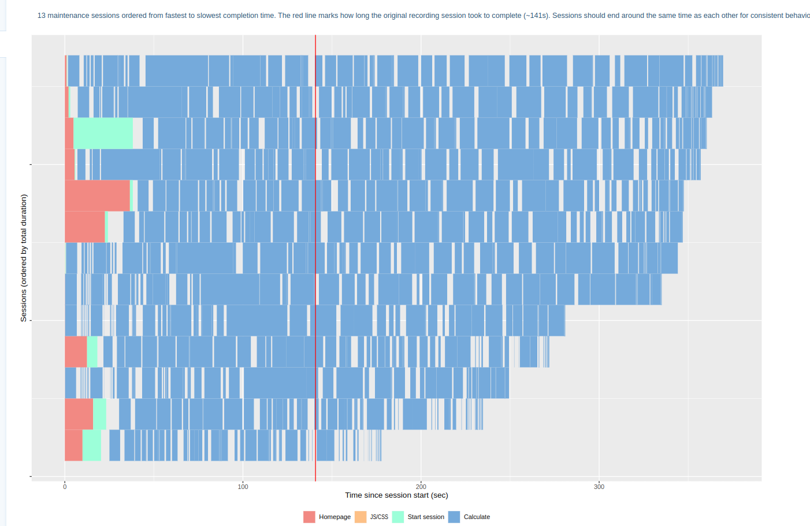
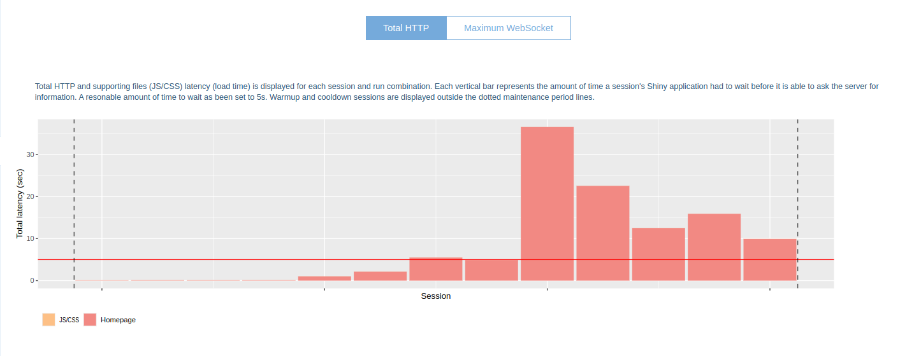
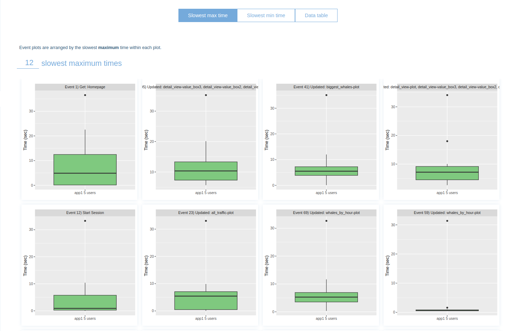
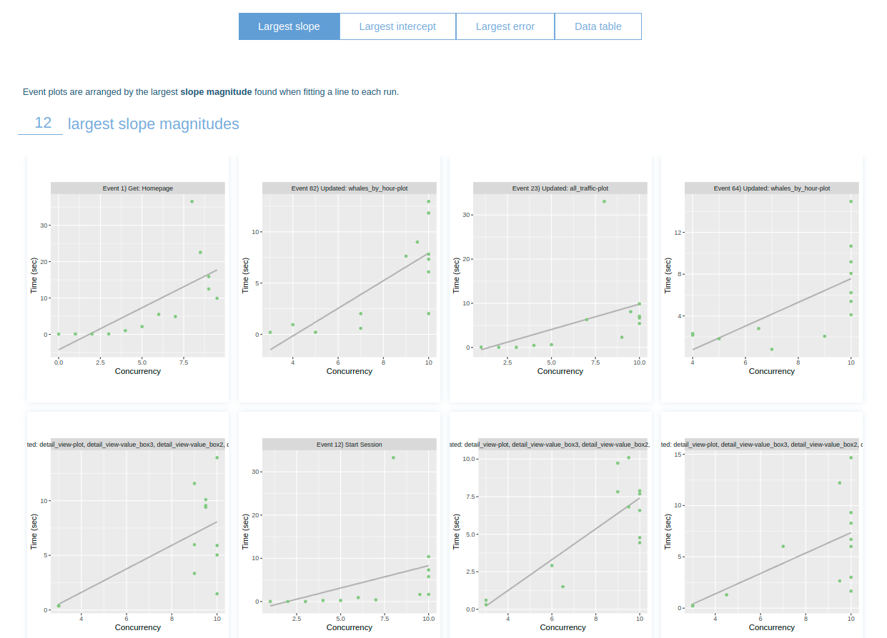

calc_whales_by_hour <- function(df, df_whales) {
whales_by_hour <-
df |>
inner_join(df_whales, by = "ip_id") |>
count(hour, ip_name, name = "downloads")
whales_by_hour
}4 Intermezzo: profiling whale v1
There are two ways to measure the performance of this app:
We can analyze the amount of time each function takes to execute and try to optimize them. This measures the experience of a single user. We will use ’profviz` for that.
We can analyze the behavior of \(n\) concurrent users in the app and see what functions/outputs/reactives are taking more time. Remember: since R is single-threaded, if 10 people are using the app and one session triggers a slow calculation, all sessions will have to wait for it to finish. We will use
shinyloadtestfor that.
4.1 profviz
Following this tutorial from the profviz package, I recorded one session of the app being used. I just roamed around a bit, changing the inputs and seeing some graphs.
Looking at the profviz result, we can think of some changes to make in the app:
- The function
calc_whales_by_hourtakes around 1/4 seconds to run; it is not bad, but with dozens of concurrent users this can be a problem.
The code for this function is simple:
but with 7 million rows this anti join can get a little slow. Every time you change the number of whales, this is recalculated. One solution is to calculate the counting just one time for every ip_id and already calculate the top 25 whales (which is the maximum number for the selectInput).
- Downloading the data takes a long time. Some files can have ~100MB. Reading them also takes time. We will cache these operations.
4.2 shinyloadtest
Following the shinyloadtest docs, we have to:
Install
shinycannon: a tool in Java to simulate \(n\) concurrent users. If you got any errors, take a look at your Java version.Run your app in a background job (to not block your R session).
I created a directory called jobs/ where I stored these scripts. For example, to run App 1 deleting all the files in data_cache, I wrote
devtools::load_all()
run_app1(delete_files = TRUE)and then click to run as background job on RStudio.
- Run
record_session: this will open a new tab where you can play around the app simulating a user; the output is a recording object.
More precisely, I ran
shinyloadtest::record_session(glue::glue("http://127.0.0.1:8001"), output_file = "app1")- Use the
shinycannoncommand to run the recording with \(n\) users. Here I chose \(n = 10\) and a minimum duration of 4 minutes. The output is saved onrun_app1w10(App 1, run with 10 workers).
shinycannon app1 http://127.0.0.1:8001 --workers 10 --loaded-duration-minutes 4 --output-dir run_app1w10 --overwrite-outputYou can see R/load_test.R for some auxiliary functions.
The complete report can be seen on my_runs.html, but here are some highlights:



